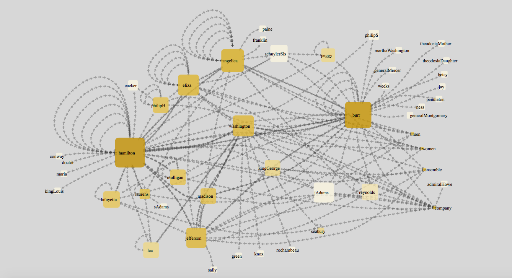
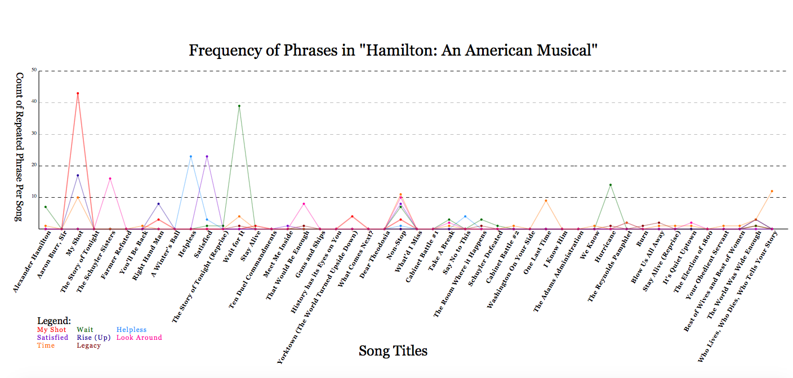
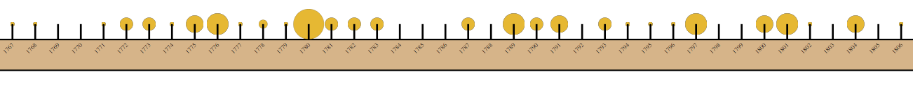
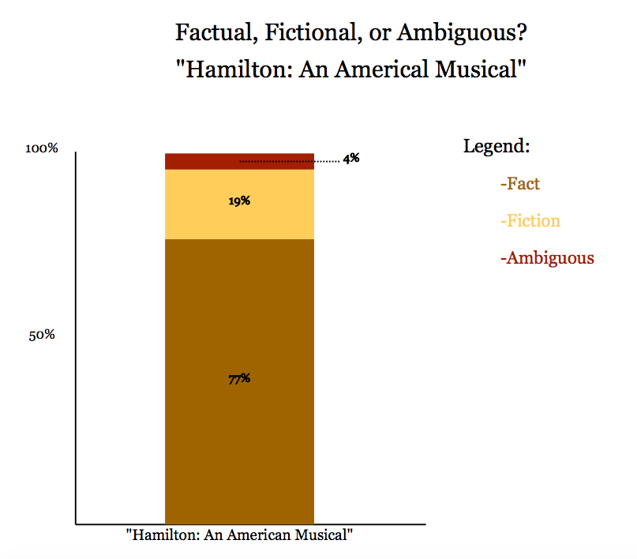

Visualizations and Analysis
Network Analysis of Speakers and References

Line Graph and Table of Repeated Phrases

Map of Places Mentioned in the Musical
Timeline of Musical

Bar Graph of Fact, Fiction, and Ambiguity in the Lyrics
